🌊
Day 1
May 8
島
01
東京 → 四国 → 九州
車窓からの景色
ありったけの登山道具と3-4週間分の荷物を無造作に詰め込み出発。初日はどこまで行けるかな… 結果的に明るいうちに明石海峡 - 鳴門海峡を渡り、四国へ上陸。


四国・九州・屋久島・中国地方
MAY 8 – MAY 28
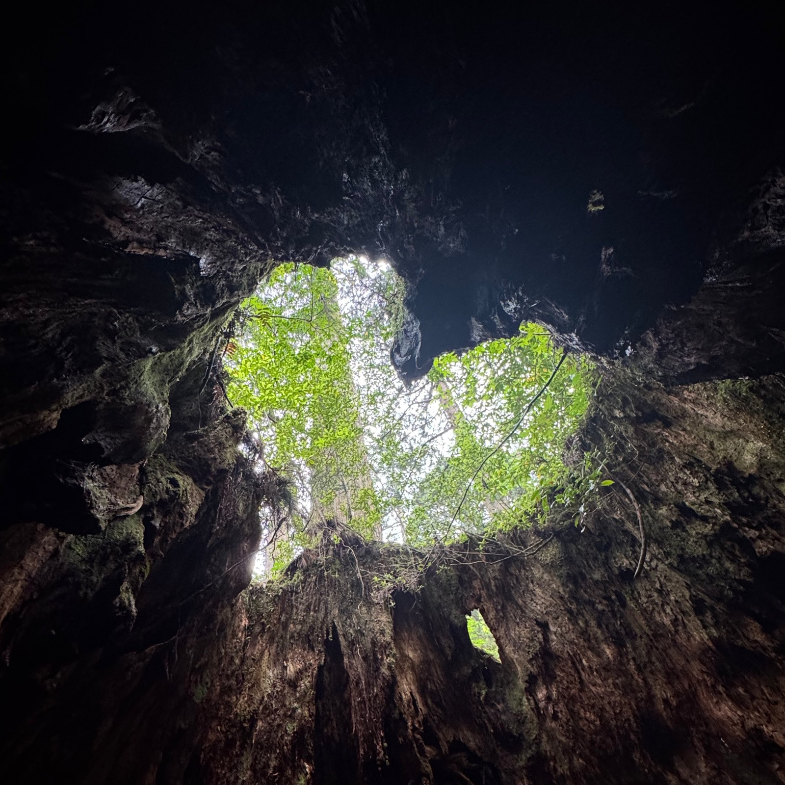
早いもので社会人になり四半世紀。初めて「サバティカル休暇」なるものを頂きました。マイカーで四国→九州&屋久島→中国地方と巡り、最後は実家の松本へ立ち寄る、（結果的に）3週間4,000kmの一人旅。
基本的には朝チェックアウトしたら目的の山に直行し、下山したら天気予報・体調・時計と相談し、目的地を決めTrivagoで宿（目標：5,000円以内！）を探し次の麓に移動するという、自分にとっては夢のような生活。西日本の日本百名山9座コンプリート！
晴天続きで、山の稜線、咲き誇る花、雲海、水平線や海に浮かぶしまなみ、夕陽、虹……言葉を失う美しい景色をこれでもかというほど味わいました。
ずっと沈黙の旅になるかと危惧していたけど、登山口やフェリー乗り場等至る所で一期一会的な出会いがあり、SNSやYAMAPまで交換したり、とある宿ではウェルカムドリンクを貰いに行ったら色んな国からの旅人が次々と集まり結局2時間くらい飲み続けるなんてことも。結局百人以上と会話したのでは。
屋久島も本当に素晴らしい場所だった。こちらはツアーに申し込んで大正解。良いガイドさんと仲間に恵まれ、学生に戻ったような、遠足のようなひとときでした。山奥にひっそり佇む縄文杉の貫禄は凄かった。
素敵な休暇制度を設けてくれている会社、不在中にカバーしてくれた上司や同僚、快く送り出してくれた家族に心から感謝！
↓ SCROLL
TOTAL DAYS
DRIVING
SUMMITS
PREFECTURES
SHIKOKU · DAY 1–3
東京 → 四国 → 九州
ありったけの登山道具と3-4週間分の荷物を無造作に詰め込み出発。初日はどこまで行けるかな… 結果的に明るいうちに明石海峡 - 鳴門海峡を渡り、四国へ上陸。
香川
かねてからトライしたかった朝うどん。ローカルの常連さんしかいない。セルフでおでんを頂きながら、朝うどんを待つ。
香川
現存天守12城の一つ。60m以上石垣の上に立つコンパクトなお城
徳島
四国の屋根とも呼ばれる剣山。四方八方に何重にも山波が広がる。空を見上げたら海底にいるかのような錯覚に。
愛媛
ずっと憧れていた山。鎖場は何度か経験済だけど、ここまでの数と高低差と斜度は別格に感じた。技量のみならずスタミナとの戦い。白装束の方々の多さや独特の和楽器の演奏に、あぁここは四国なのだと。そして、登頂して初めてあの角度で見える天狗岳は本当に感動モノ。
KYUSHU · DAY 4–11 & 15–16
九州
雲海、山並み、温泉、海...
熊本 · 阿蘇
草原と火口湖が織りなす別世界
長崎
連日の登山の骨休み日。夜は宿でウェルカムドリンクを飲んでいたら、世界中からの旅人が次々集まり、気づけば2時間の飲み会に。
鹿児島
旅に出て初めてハンドルを握らなかった一日。路面電車→フェリー→周遊バスで湯之平展望台へ。フェリーターミナルで火山灰をTシャツに浴びた瞬間、ここが活火山だと実感。
佐賀
弥生時代の大規模集落遺跡
YAKUSHIMA · DAY 11–15
屋久島
屋久島フェリーで鹿児島を出航。船上から少しずつ大きくなる島のシルエット。
屋久島
もののけ姫の舞台。苔むす原生林と花崗岩の岩、豊かな川の水、太鼓岩からの絶景。
屋久島
念願の九州最高峰。天気予報は雨10mm超だったのに、終始弱雨以下。雨に霞む屋久島らしい森と旬の花を満喫。ツアーのガイドさんとメンバーに恵まれた夢のような12時間の山行
屋久島
龍神の滝、千尋の滝、トローキの滝、大川の滝。中間ガジュマルにも立ち寄り、島内をぐるりとドライブ
屋久島
前日の天気予報は雨15〜18mm。蓋を開けてみれば奇跡のように、登山口に戻るまで一度も雨に見舞われなかった。ウィルソン株、大王杉、夫婦杉、そして縄文杉。復路はガイドさんの計らいで川遊びまで——勢いよく滑ってほぼ全身ずぶ濡れに。学生時代に戻ったかのような一日
屋久島
5日間お世話になったホテル屋久島山荘。林芙美子の小説「浮雲」の舞台らしい
CHUGOKU · DAY 16–18
福岡 / 山口
関門海峡クローバーきっぷで、トロッコ列車→船→バス→人道トンネルで海峡往復
広島
江ノ島くらいの大きさかと思っていたら、フェリーがひっきりなしに就航する大きな島。弥山という535mの山まである。海抜0mから登るそれなりの登り応え。頂上から広島市街～瀬戸内海まで360度のパノラマ。
広島
14万もの尊い命が失われ、生き残った方々も長期にわたり苦しめられた。涙無しには回れない。こんなことが二度とあってはならぬとの思いが募る。一方で焦土から美しい街並みへと復興を遂げた広島と長崎に、人間の逞しさと前を向く強さも感じる
鳥取
山続きの旅のラストを締めくくる、異質な風景。砂丘は24時間営業らしい
10 SUMMITS
剣山
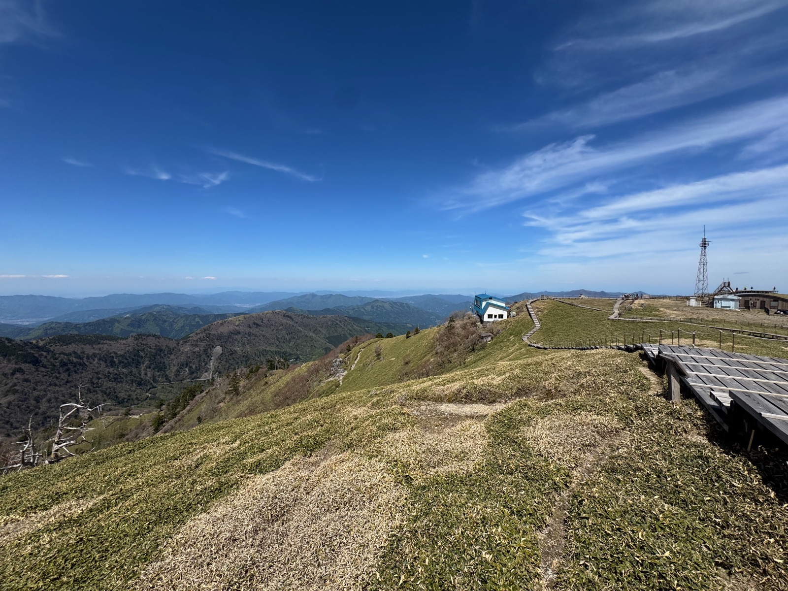
TOKUSHIMA
Day 2 · May 9
石鎚山
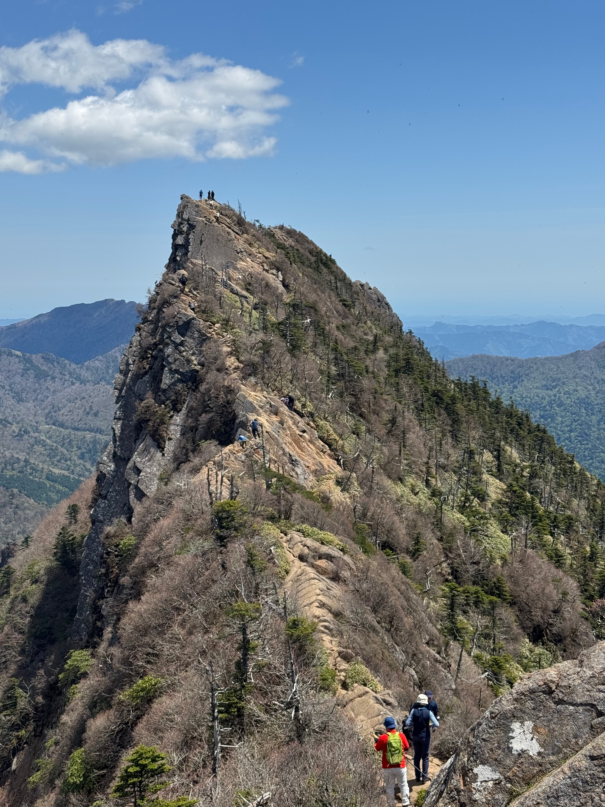
EHIME
Day 3 · May 10
九重山
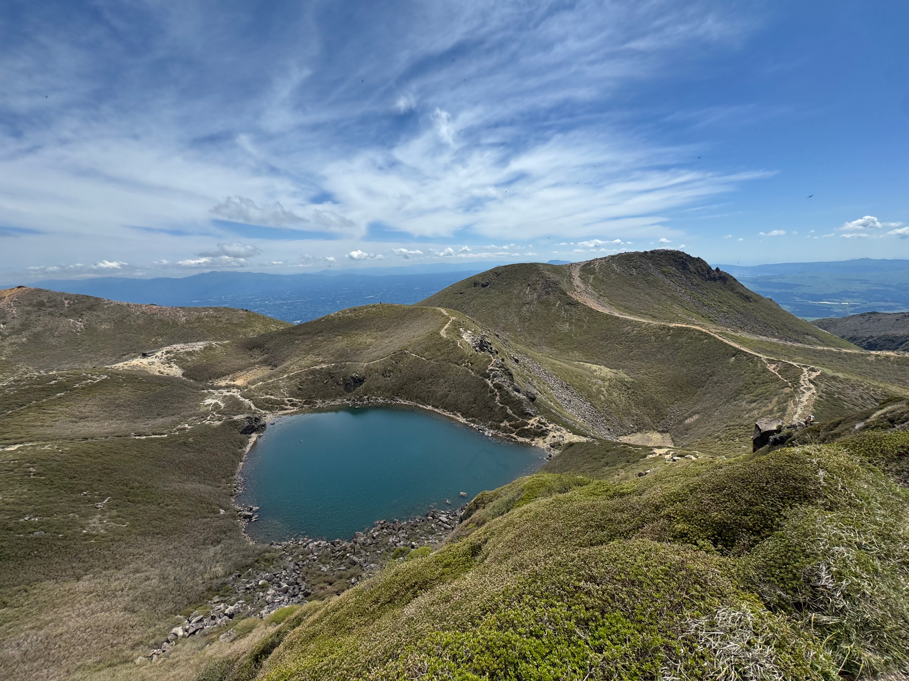
OITA
Day 4 · May 11
祖母山

OITA / MIYAZAKI
Day 5 · May 12
普賢岳
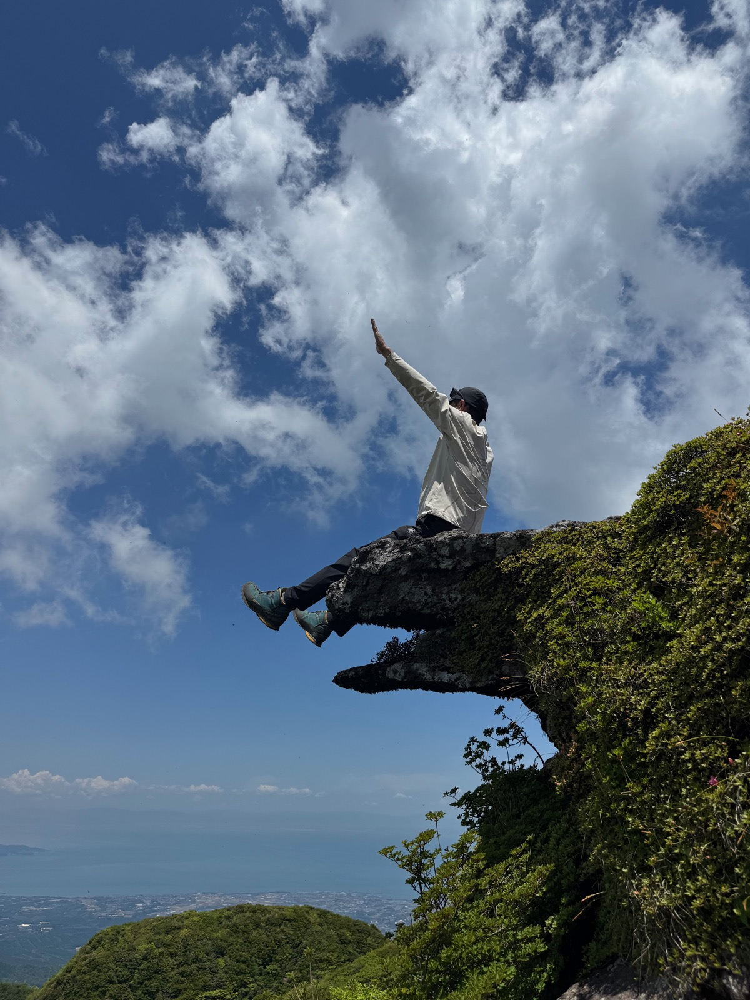
NAGASAKI
Day 7 · May 14
韓国岳

KAGOSHIMA
Day 8 · May 15
開聞岳
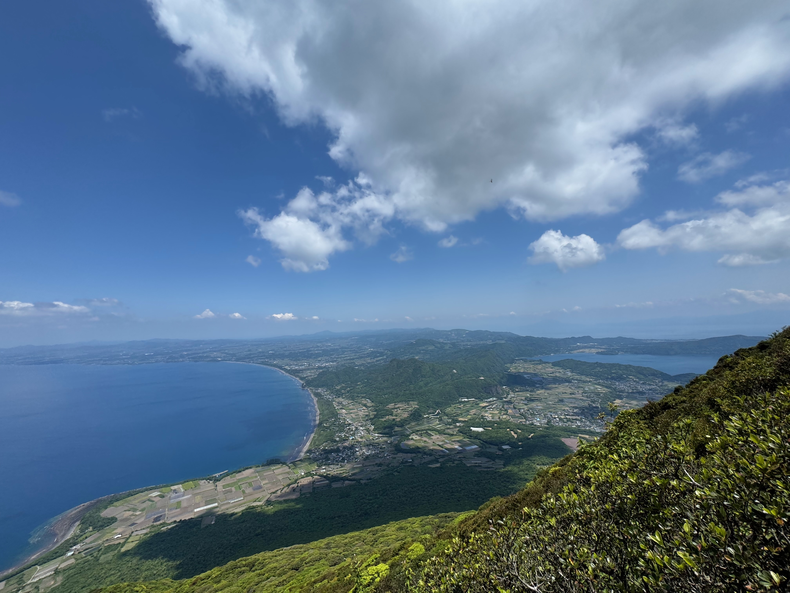
KAGOSHIMA
Day 9 · May 16
宮之浦岳
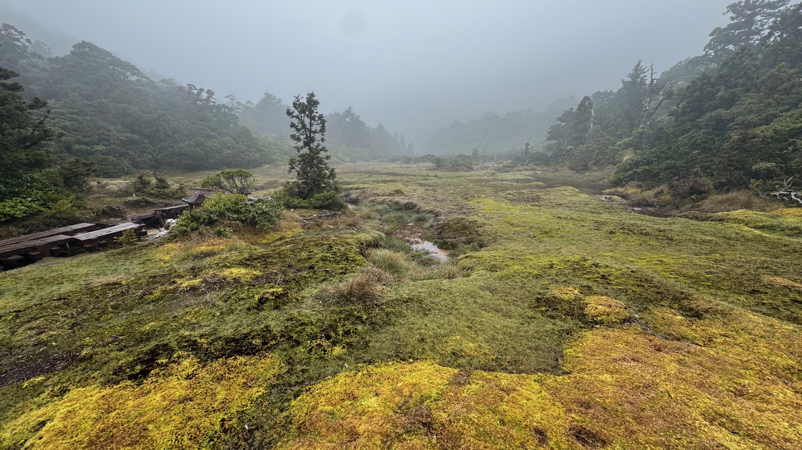
YAKUSHIMA
Day 12 · May 19
宮島弥山
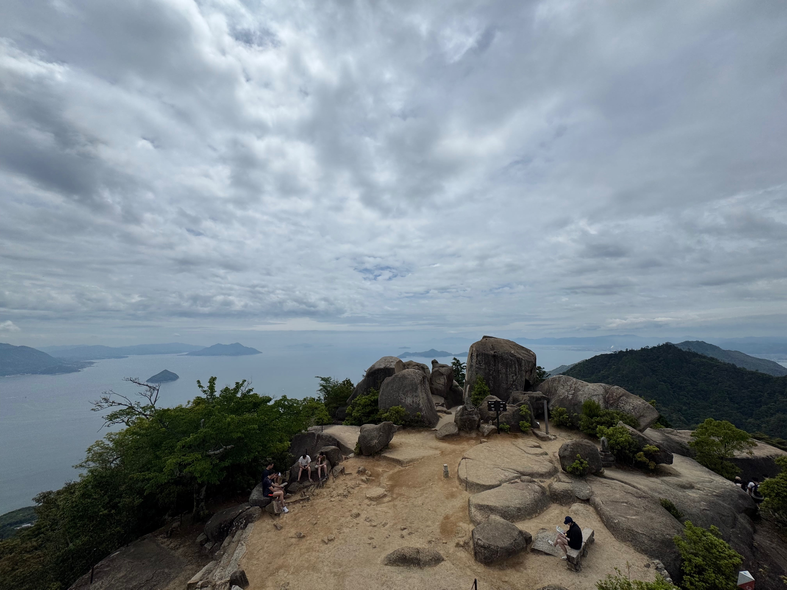
HIROSHIMA
Day 17 · May 24
伯耆大山

TOTTORI
Day 18 · May 25
FOOD
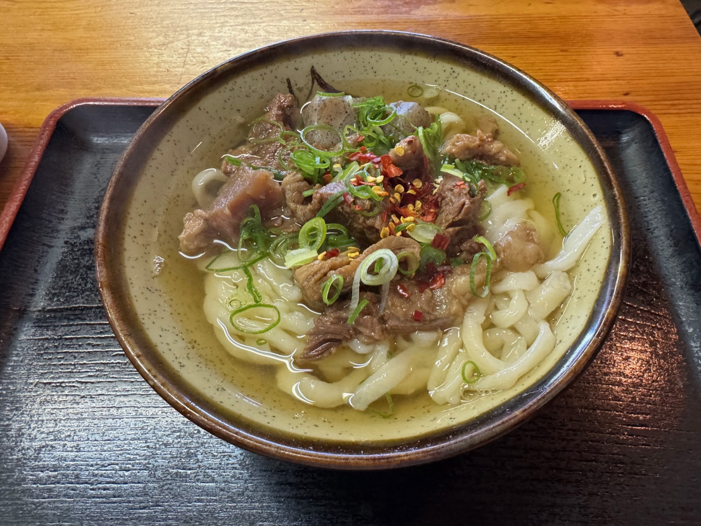
朝うどん
丸亀 · Day 2
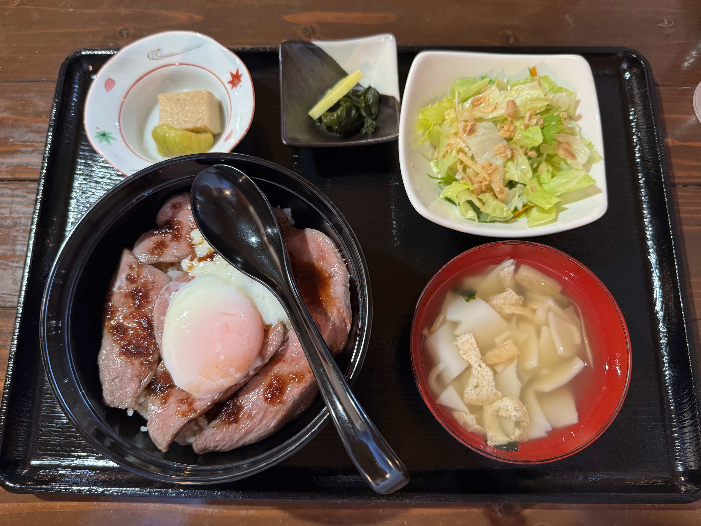
ローストビーフ丼
阿蘇 · Day 4
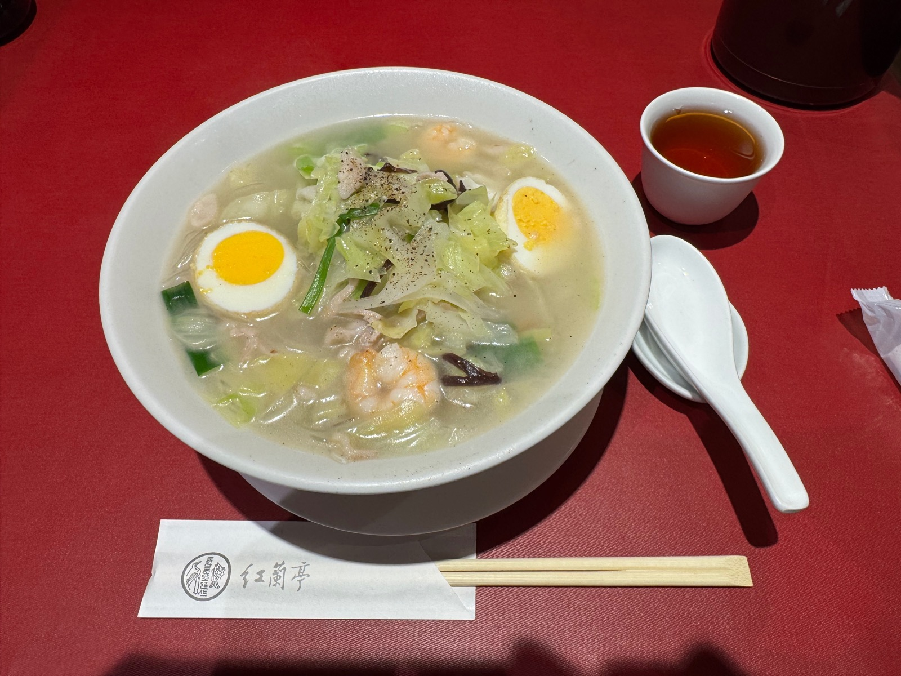
太平燕
熊本 · Day 5
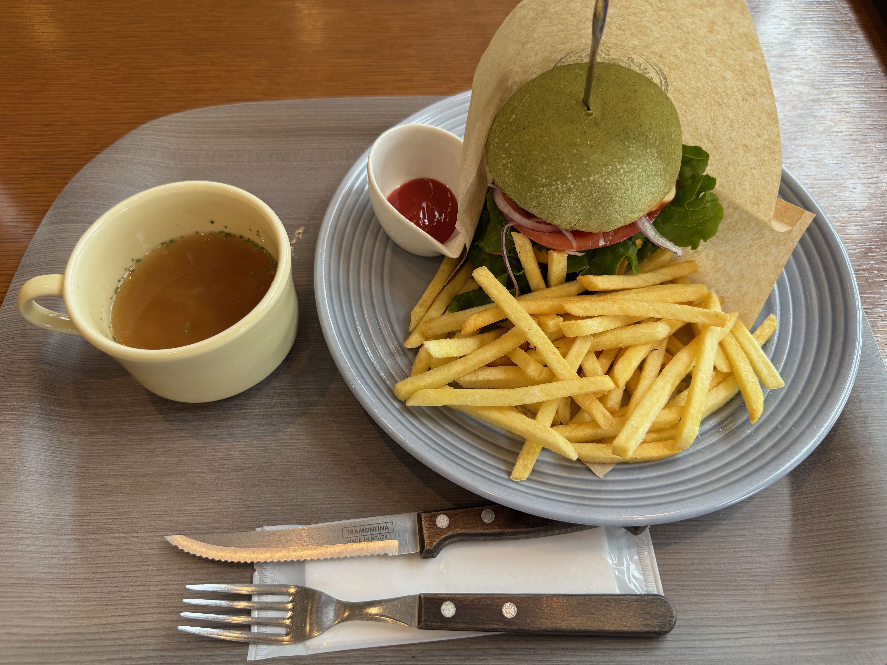
ヌッカバーガー
阿蘇 · Day 5

ゴボ天うどん
島原 · Day 6

とんかつ
鹿児島・Day 9
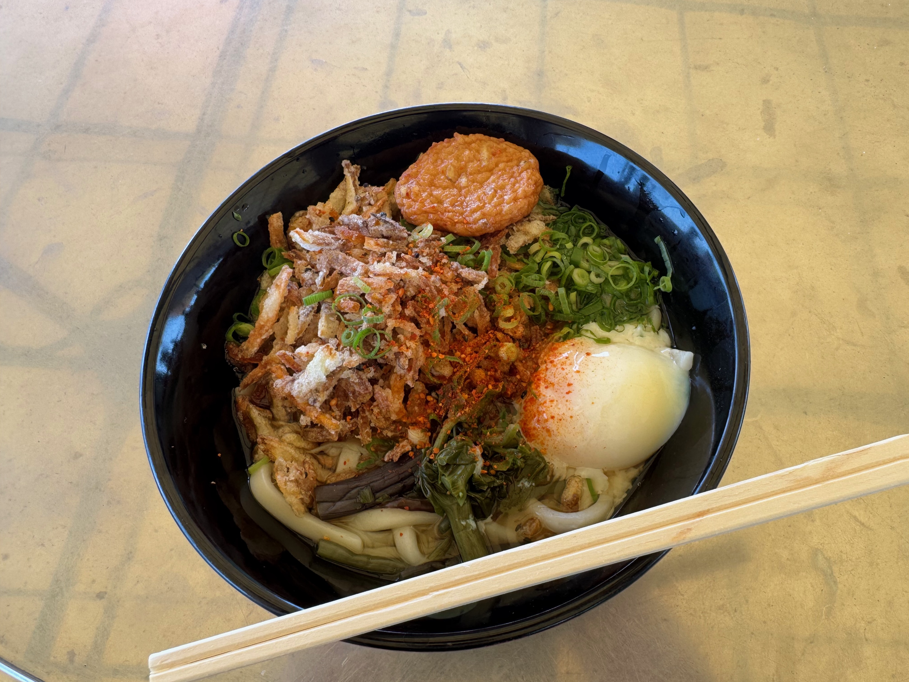
桜島うどん
桜島 · Day 10
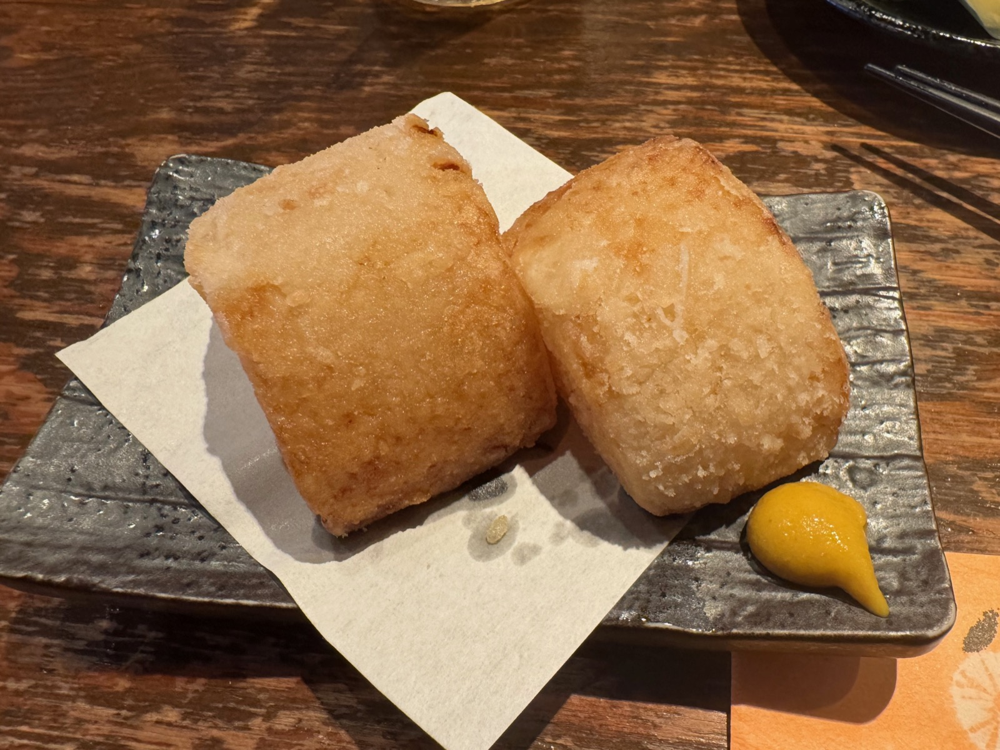
大根唐揚げ
鹿児島 · Day 10
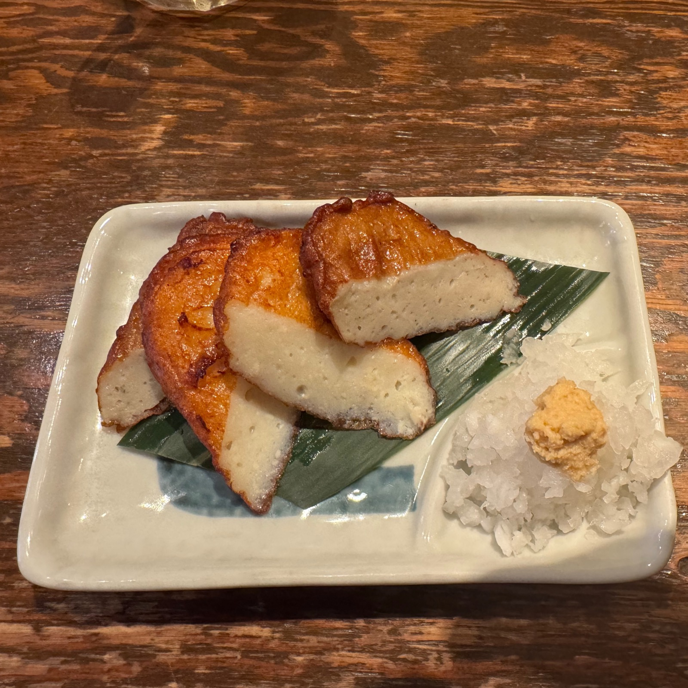
さつま揚げ
鹿児島 · Day 10

トビウオの唐揚げ
屋久島 · Day 11

瓦そば
山口 · Day 16
REFLECTIONS
🚧 UNDER CONSTRUCTION 🚧